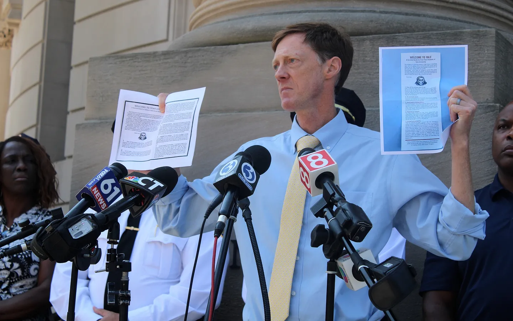

Fortress
Yale
To many, Yale conjures up visions of ivory towers, and gothic architecture; it is rife with secrecy and tradition and filled with the rich and powerful.
In this myth, New Haven falls into the background. For those in New Haven, Yale becomes, at different times, a bastion of relevance, a financial lifeline, an annoying nuisance, an encroaching menace.
But how do Yale students interact with and perceive New Haven?
In other words - what is the Yale bubble?

The Moat
Old Campus vs. the New Haven Green
The first stop for Yale students - both literally and metaphorically - is Old Campus, a collection of dorms inhabited by first-years.
During the Colonial era, Old Campus used to be open and linearly structured as the Old Brick Row, with a line of dorms running down the middle. However, beginning in 1870, president Noah Porter started to enclose the space, with Farnam and Durfee Halls being constructed along the perimeter. The only building still standing is Connecticut Hall.
Today, the space is physically enclosed by steel fences and restricted to students. As a result, the primary interaction with wider New Haven is the occasional intruder, for which Yale police arrive very quickly.
Immediately adjacent to Old campus, through Phelps Gate, is Old Campus’ mirror space - the New Haven Green. They are deeply similar and different; one is the heart of Yale, the other New Haven. One private, one public.
Most importantly, one is “secure” - and the other is not.
“Don’t go on the Green at night. You might get harassed.”
The Courtyards
The Residential Colleges
In 1933, Yale inaugurated the residential colleges, all of which have a similar layout with an enclosed green space and revivalist architecture. Each college is self-contained, with its own gym, kitchen, dining hall, and amenities, and exclusive - even to the other residential colleges.
As a result, the spatial and social patterns of life at Yale often revolve around the colleges - and ‘what’s your college?’ is often the second question students ask. By segmenting the student body, the colleges enable Yale to feel both physically and socially smaller - and more insular.
The Towers
The Secret Societies
Intertwined with Yale’s history is that of its secret societies.
They are Yale’s most unique feature, and scattered around New Haven are the inscrutable, mysterious, imposing tombs from which they operate. The culture and aura surrounding them are so famous that they appear in pop culture, most recently the fantasy book Ninth House.
For the very few chosen, ascending these secluded towers, rumored to be the sites of rituals and discussions among future presidents and leaders, is a gift.
For everyone else, these are anti-spaces; black holes pocketing New Haven and pinnacles of exclusionary privilege.
The Gate
Union Station
Every journey to Yale begins at the gate - Union Station, south of downtown. New Haven sits on the Northeast Corridor, and Yale students use it often to escape New Haven, heading to New York City and Boston for day trips and tourism.
Students mingle with commuters, tourists, and locals. Union Station is served by the Yale shuttle, which allows students to bypass downtown.
“The area between the core Yale campus and the station is dangerous. Take an Uber.”
The benches say No Loitering - not that this stops anyone.
The Market
The Shops at Yale
West of Sterling Memorial Library and south of Old Campus, the Shops at Yale are the dominant site for economic interaction between Yale students and New Haven. Though named the Shops at Yale, they could be better described as the Shops for Yale - many of them cater to upscale and luxury tastes unaffordable to average New Haven residents, and exist primarily to satisfy students and prospective-student tourists.
Over time, you can spot the same homeless people on the same corners every day. On one of those corners, a Sweetgreen is being built this year.
The Barracks
Yale Police
Yale is protected not only by the New Haven PD, but also interlocking layers of security, including Yale Police, Yale Security, and a network of cameras, alarms, and intercom systems. Though violence against Yale students is rare, police systems continue to have a commanding presence at Yale.
In 2023, in the middle of contract negotiations, the Yale Police union passed out Yale “survival guides” to first-year students and families on Welcome Weekend, mirroring the “Fear City” flyer passed out by the NYC police union in 1975. The pamphlets described New Haven crime in alarming terms and recommendations included avoiding public transport, avoiding downtown New Haven, and never walking alone. They set off a political firestorm as New Haveners felt they were being demonized; Mayor Elicker, Police Chief Campbell, and others heavily condemned the pamphlets as fear-mongering.

Conclusion
As Yale students enact relationships with New Haven, they engage in placemaking - embedding meaning in the spaces they reside in. Together, the places Yale has made form a carefully constructed, insular, and delineated bubble, shielding students from the outside world - a fortress. Through a combination of urban layout and cultural influences, Yale leaders and students have continued to preserve and fortify this fortress into the present.
However, this conception is increasingly being challenged, both from outside and in, as attacks are volleyed on Yale’s tax-exempt status, elite perception, and admissions system.
As Yale and New Haven continue their third century together, how will Fortress Yale respond?